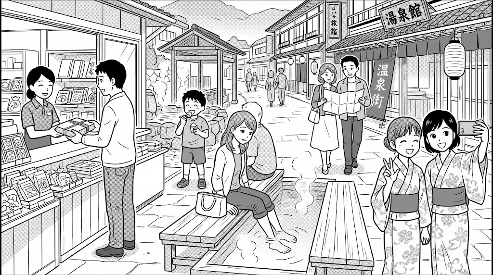
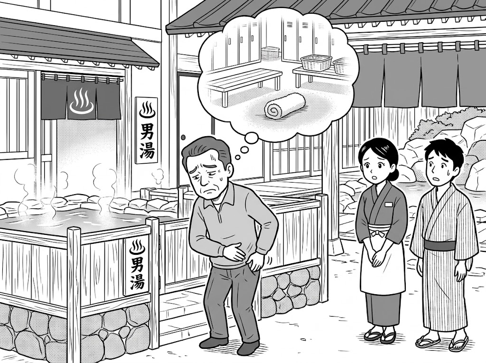

Pattern 1: He cannot enter the hot spring because he has forgotten his towel.
Pattern 2: He left his towel in the locker room, so he cannot take a bath.
Q: According to the passage, how can Japanese people refresh their tired bodies and forget about their busy daily lives?
These days, many people like staying at traditional Japanese inns when they travel. Do you think staying at traditional inns is a good idea?
Your Opinion: [ Yes / No ]
Do you like traveling with your family or friends during vacations?
Your Opinion: [ Yes (I do) / No (I don't) ]
"According to the passage, how can Japanese people refresh their tired bodies and forget about their busy daily lives?"
By bathing in hot water.
"Tell me as much as you can about what the people are doing."
A: A woman is putting her feet in a foot bath.
B: A man is buying souvenirs at a shop.
C: Two girls are taking a picture in yukata.
D: A boy is eating a hot spring egg.
E: A couple is looking at a map.
"Now, look at the man in Picture B. Please describe the situation."
• He cannot enter the hot spring because he has forgotten his towel.
• He left his towel in the locker room, so he cannot take a bath.
"These days, many people like staying at traditional Japanese inns when they travel. Do you think staying at traditional inns is a good idea?"
(Yes): Guests can experience traditional Japanese culture, such as tatami rooms and yukata. / Most inns serve delicious local food.
(No): Staying at traditional Japanese inns is often much more expensive than modern hotels. / Modern hotels offer more flexible check-in times.
"Do you like traveling with your family or friends during vacations?"
(Yes): Traveling together is a great way to make special memories with them. / We can talk and have a lot of fun visiting spots.
(No): Tourist spots and trains are usually very crowded during vacations. / I prefer staying home to relax peacefully.